library(tidyverse)
set.seed(1)
flights |>
slice_sample(n = 5)1 Análise Descritiva de Dados
Este capítulo tem como objetivo apresentar os fundamentos da análise descritiva de dados, explorando conceitos estatísticos básicos e técnicas de visualização amplamente utilizadas em ciência de dados. Ao longo do capítulo, esses conceitos são aplicados a um conjunto de dados reais do setor aéreo, permitindo conectar teoria estatística a problemas práticos de análise e tomada de decisão.
1.1 Base de Dados e Contexto do Estudo
Nesta seção, é apresentado o conjunto de dados utilizado ao longo do capítulo. O pacote {nycflights13} fornece informações detalhadas sobre voos que partiram dos aeroportos de Nova York em 2013, além de dados meteorológicos e características dos aeroportos e aeronaves. A compreensão da estrutura e do contexto desses dados é fundamental para interpretar corretamente as análises realizadas nas seções seguintes. As tabelas disponíves são:
flights, que contém informações sobre voos, como horários de partida e chegada, companhias aéreas, destinos e atrasos;weather, que fornece dados meteorológicos relacionados aos aeroportos de Nova York durante o ano de 2013;airlines, que lista informações sobre as companhias aéreas que operam em Nova York;airports, que contém detalhes sobre os aeroportos de Nova York;planes, que oferece dados sobre os aviões utilizados nos voos. Essas tabelas abrangentes permitem uma análise abrangente e detalhada do sistema de transporte aéreo da cidade de Nova York em 2013.
A análise será feita utilizando a liguagem R. Utilize o código abaixo para carregar o pacote na sua sessão e exibir uma amostra da base que registra os voos, flights.
| year | month | day | dep_time | sched_dep_time | dep_delay | arr_time | sched_arr_time | arr_delay | carrier | flight | tailnum | origin | dest | air_time | distance | hour | minute | time_hour |
|---|---|---|---|---|---|---|---|---|---|---|---|---|---|---|---|---|---|---|
| 2013 | 7 | 8 | 804 | 730 | 34 | 1043 | 1010 | 33 | B6 | 683 | N809JB | JFK | MCO | 129 | 944 | 7 | 30 | 2013-07-08 07:00:00 |
| 2013 | 10 | 23 | 807 | 810 | -3 | 1102 | 1111 | -9 | DL | 1167 | N303DQ | JFK | TPA | 158 | 1005 | 8 | 10 | 2013-10-23 08:00:00 |
| 2013 | 8 | 8 | 1258 | 1255 | 3 | 1605 | 1606 | -1 | UA | 1700 | N37409 | EWR | SFO | 341 | 2565 | 12 | 55 | 2013-08-08 12:00:00 |
| 2013 | 1 | 13 | 1813 | 1815 | -2 | 2036 | 1958 | 38 | 9E | 4019 | N8432A | JFK | RIC | 55 | 288 | 18 | 15 | 2013-01-13 18:00:00 |
| 2013 | 5 | 23 | NA | 1931 | NA | NA | 2216 | NA | EV | 4204 | N14117 | EWR | OKC | NA | 1325 | 19 | 31 | 2013-05-23 19:00:00 |
1.2 Fundamentos de Estatística Descritiva
A análise descritiva busca resumir e organizar informações contidas em um conjunto de dados, fornecendo uma visão inicial de seus principais padrões e características. Nesta seção, são apresentados os conceitos fundamentais relacionados aos tipos de variáveis e às principais medidas descritivas, que servirão de base para todas as análises exploratórias realizadas ao longo do capítulo.
1.2.1 Tipos de Variáveis
As variáveis em um conjunto de dados podem ser classificadas em diferentes tipos, dependendo da natureza da informação que representam. Existem dois principais tipos de variáveis: qualitativas e quantitativas.
Variáveis Qualitativas
São características não numéricas que descrevem qualidades ou atributos dos elementos em estudo. Podem ser subdivididas em:
- Nominal: Não possuem ordem intrínseca. Exemplos incluem origem (
orign: EWR, LGA, JFK) e destino (dest: IAH, MIA, BQN) dos voos. - Ordinal: Possuem uma ordem intrínseca. Exemplos incluem níveis de classificação ou categorias ordenadas, como faixas de atraso (baixo, médio, alto) ou níveis de prioridade operacional.
Variáveis temporais, como mês e dia, frequentemente ocupam uma posição intermediária, podendo ser tratadas como quantitativas discretas ou categóricas ordenadas, a depender do objetivo da análise.
Variáveis Quantitativas
Representam quantidades numéricas mensuráveis. Podem ser subdivididas em contínuas e discretas:
- Contínua: Podem assumir qualquer valor dentro de um intervalo. Exemplos incluem tempo de voo (
air_time) em minutos e distância percorrida (distance) em milhas. - Discreta: São contáveis e assumem valores inteiros. Exemplos incluem hora programada da partida (
hour) e minuto programado da partida (minute).
1.2.2 Medidas Descritivas
As medidas descritivas são ferramentas essenciais para resumir e interpretar as características fundamentais de uma distribuição de dados.
Medidas de Posição:
As medidas de posição fornecem informações sobre a localização dos dados dentro da distribuição.
- Mínimo: O menor valor observado no conjunto de dados.
- Máximo: O maior valor observado no conjunto de dados.
- Moda: O valor que ocorre com maior frequência no conjunto de dados.
- Média: A média aritmética dos valores no conjunto de dados.
- Mediana: O valor que separa os dados em duas metades, onde metade dos dados estão abaixo dela e metade acima.
- Percentis: São os valores que dividem uma amostra ordenada em cem partes iguais. O percentil 50 é equivalente à mediana.
Medidas de Dispersão:
As medidas de dispersão indicam o quão espalhados os dados estão em torno da medida de posição central.
- Amplitude: A diferença entre o maior e o menor valor no conjunto de dados.
- Distância Interquartil: A diferença entre o terceiro quartil (Q3) e o primeiro quartil (Q1). Ela indica a dispersão dos valores centrais.
- Variância: A média dos quadrados das diferenças entre cada valor e a média.
- Desvio Padrão: A raiz quadrada da variância. Indica a dispersão dos valores em relação à média.
- Coeficiente de Variação: É a razão entre o desvio padrão e a média, expressa como uma porcentagem. Fornece uma medida relativa da variabilidade em relação à magnitude da média.
1.2.3 Resumo estatístico automatizado
A função skim() do pacote skimr, quando aplicada à uma base de dados, fornece um resumo estatístico das variáveis contidas no dataframe, incluindo contagem de observações, média, desvio padrão, mínimo, máximo e quartis para variáveis numéricas, além da contagem de valores únicos e dos valores mais frequentes para variáveis categóricas.
library(skimr)
skim(flights)| Name | flights |
| Number of rows | 33677 |
| Number of columns | 19 |
| _______________________ | |
| Column type frequency: | |
| factor | 4 |
| numeric | 14 |
| POSIXct | 1 |
| ________________________ | |
| Group variables | None |
Variable type: factor
| skim_variable | n_missing | complete_rate | ordered | n_unique | top_counts |
|---|---|---|---|---|---|
| carrier | 0 | 1.00 | FALSE | 16 | UA: 5963, EV: 5426, B6: 5403, DL: 4877 |
| tailnum | 246 | 0.99 | FALSE | 3509 | N71: 60, N71: 54, N72: 54, N72: 49 |
| origin | 0 | 1.00 | FALSE | 3 | EWR: 12239, JFK: 10917, LGA: 10521 |
| dest | 0 | 1.00 | FALSE | 99 | ATL: 1765, ORD: 1709, LAX: 1601, MCO: 1523 |
Variable type: numeric
| skim_variable | n_missing | complete_rate | mean | sd | p0 | p25 | p50 | p75 | p100 | hist |
|---|---|---|---|---|---|---|---|---|---|---|
| year | 0 | 1.00 | 2013.00 | 0.00 | 2013 | 2013 | 2013 | 2013 | 2013 | ▁▁▇▁▁ |
| month | 0 | 1.00 | 6.53 | 3.41 | 1 | 4 | 7 | 9 | 12 | ▇▆▆▆▇ |
| day | 0 | 1.00 | 15.72 | 8.79 | 1 | 8 | 16 | 23 | 31 | ▇▇▇▇▆ |
| dep_time | 824 | 0.98 | 1353.50 | 488.88 | 1 | 909 | 1408 | 1749 | 2400 | ▁▇▆▇▃ |
| sched_dep_time | 0 | 1.00 | 1349.38 | 468.84 | 500 | 910 | 1400 | 1730 | 2359 | ▇▆▇▇▃ |
| dep_delay | 824 | 0.98 | 12.45 | 39.93 | -32 | -5 | -1 | 11 | 1137 | ▇▁▁▁▁ |
| arr_time | 872 | 0.97 | 1503.77 | 536.23 | 1 | 1105 | 1538 | 1944 | 2400 | ▁▃▇▇▇ |
| sched_arr_time | 0 | 1.00 | 1539.85 | 499.94 | 1 | 1125 | 1600 | 1951 | 2359 | ▁▃▇▇▇ |
| arr_delay | 960 | 0.97 | 6.80 | 44.49 | -70 | -17 | -5 | 14 | 1127 | ▇▁▁▁▁ |
| flight | 0 | 1.00 | 1970.27 | 1632.59 | 1 | 561 | 1496 | 3465 | 6181 | ▇▅▂▃▁ |
| air_time | 960 | 0.97 | 150.95 | 92.77 | 22 | 83 | 130 | 192 | 667 | ▇▃▂▁▁ |
| distance | 0 | 1.00 | 1041.68 | 724.33 | 80 | 509 | 888 | 1389 | 4983 | ▇▃▂▁▁ |
| hour | 0 | 1.00 | 13.23 | 4.68 | 5 | 9 | 14 | 17 | 23 | ▇▆▆▇▃ |
| minute | 0 | 1.00 | 26.19 | 19.31 | 0 | 8 | 29 | 44 | 59 | ▇▃▆▃▅ |
Variable type: POSIXct
| skim_variable | n_missing | complete_rate | min | max | median | n_unique |
|---|---|---|---|---|---|---|
| time_hour | 0 | 1 | 2013-01-01 05:00:00 | 2013-12-31 21:00:00 | 2013-07-02 16:00:00 | 6231 |
Veja que a tabela flights indica um conjunto relativamente grande e bem estruturado, com 33.677 observações e 19 variáveis, majoritariamente numéricas, o que é adequado para análises descritivas e exploratórias. As variáveis categóricas apresentam alta completude e diversidade relevante — com três aeroportos de origem, 99 destinos e 16 companhias aéreas — refletindo uma malha aérea ampla e heterogênea. As variáveis de atraso na partida e na chegada exibem médias positivas, mas medianas negativas, evidenciando distribuições assimétricas à direita, nas quais poucos atrasos extremos elevam a média. Observa-se também a presença moderada de valores ausentes, concentrados principalmente em horários e atrasos, o que é consistente com cancelamentos ou registros incompletos. Em conjunto, os dados sugerem boa qualidade geral, variabilidade operacional significativa e potencial para revelar padrões relevantes de pontualidade, sazonalidade e desempenho entre aeroportos e rotas.
1.2.4 Visualização de dados
A visualização de dados é essencial na análise de dados, pois transfoma valores em representações visuais claras. Os gráficos facilitam a identificação de padrões e tendências, além de melhorar a comunicação dos resultados, contribuindo para a tomada de decisões informadas.
Os gráficos apresentados a seguir não têm como objetivo responder perguntas de negócio específicas, mas ilustrar como diferentes tipos de visualizações podem ser utilizados para explorar dados conforme o tipo de variável envolvida.
Histograma
Um histograma é útil para representar a distribuição de uma variável quantitativa. Ele divide os dados em intervalos e mostra a frequência de observações em cada intervalo.
ggplot(flights, aes(x = air_time)) +
geom_histogram(binwidth = 30, fill = "skyblue", color = "black") +
labs(title = "Distribuição do Tempo de Voo",
x = "Tempo de Voo (minutos)",
y = "Frequência")
Boxplot (Gráfico de Caixa)
Um boxplot é útil para visualizar a distribuição, a mediana e a dispersão dos dados. Ele representa os quartis, a mediana e os possíveis valores discrepantes.
Por ser um gráfico que contém bastante informação, apresento em detalhes os principais elementos de um boxplot:
Caixa (Box): A caixa do boxplot representa o intervalo interquartil (IQR), que é a distância entre o primeiro quartil (Q1) e o terceiro quartil (Q3). Ela abrange o meio dos dados e mostra onde está localizada a maior parte dos valores.
Linha Mediana (Mediana): A linha dentro da caixa representa a mediana dos dados, que é o valor que divide o conjunto de dados ao meio.
Whiskers (Hastes): As hastes que se estendem para fora da caixa, conhecidas como whiskers, mostram a extensão dos dados. Podem ser calculadas de diferentes maneiras, mas geralmente estendem-se até 1,5 vezes o IQR a partir dos quartis.
Outliers (Valores Atípicos): Valores que estão além das extremidades dos whiskers são considerados outliers e são representados individualmente no gráfico.
Pontos: Além dos outliers, pontos individuais podem ser mostrados no gráfico para representar dados que são excepcionalmente distantes da maioria dos valores.
Esses elementos combinados fornecem uma representação concisa e informativa da distribuição dos dados, destacando medidas de tendência central, variabilidade e presença de valores atípicos.
# Criando um boxplot para a variável "distance"
ggplot(flights, aes(y = distance)) +
geom_boxplot(fill = "lightgreen", color = "black") +
labs(title = "Distribuição da Distância dos Voos", y = "Distância (milhas)")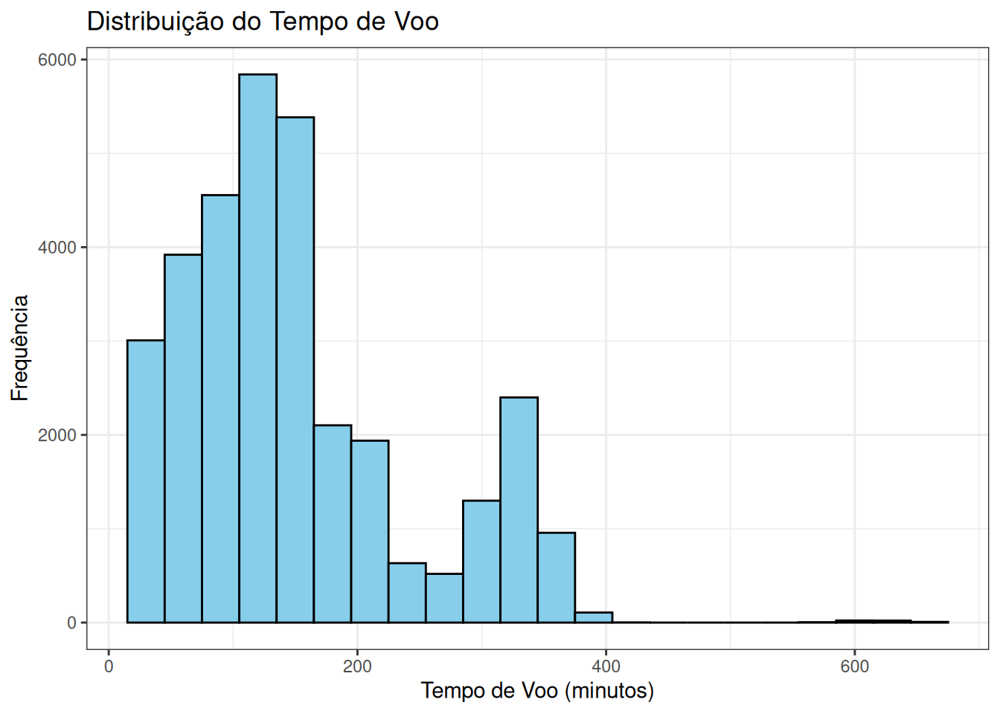
Gráfico de Densidade
Um gráfico de densidade é útil para visualizar a distribuição de uma variável quantitativa de forma suavizada.
# Criando um gráfico de densidade para a variável "dep_delay"
ggplot(flights, aes(x = dep_delay)) +
geom_density(fill = "lightcoral", color = "black") +
labs(title = "Densidade do Atraso na Partida",
x = "Atraso na Partida (minutos)",
y = "Densidade")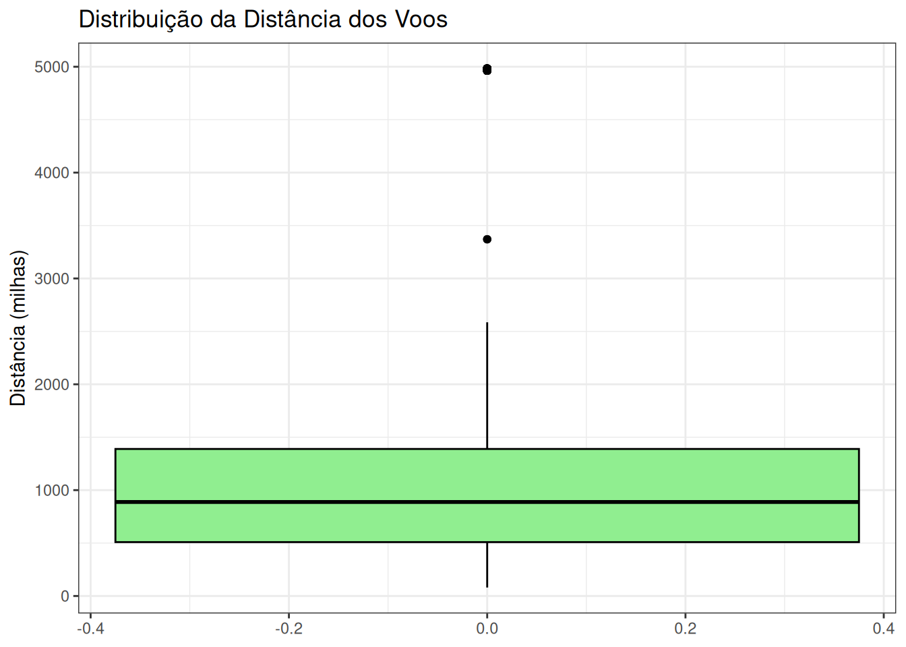
Gráfico de Dispersão
Um gráfico de dispersão é útil para visualizar a relação entre duas variáveis quantitativas. Ele mostra como uma variável depende da outra.
# Criando um gráfico de dispersão para a relação entre "air_time" e "distance"
ggplot(flights, aes(x = air_time, y = distance)) +
geom_point(color = "darkorange", alpha = 0.5) +
labs(title = "Relação entre Tempo de Voo e Distância",
x = "Tempo de Voo (minutos)",
y = "Distância (milhas)")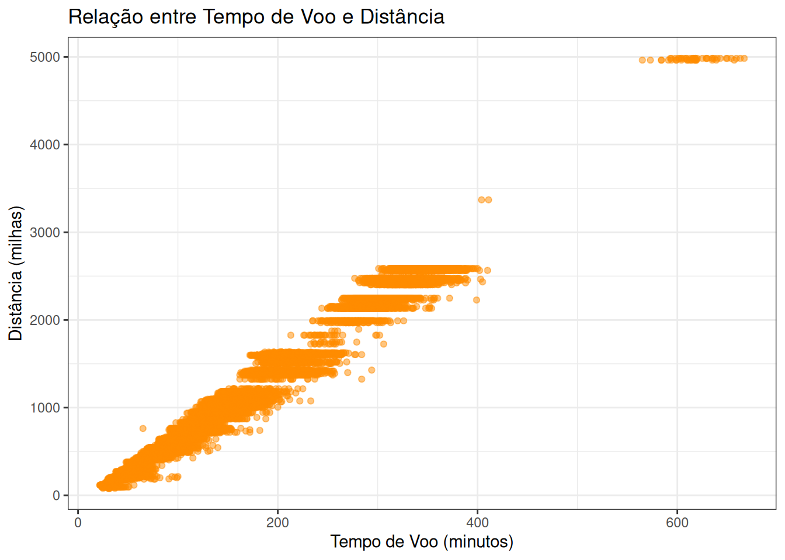
Gráfico de Barras
Um gráfico de barras é útil para representar a frequência de ocorrência de diferentes categorias em uma variável discreta.
# Criando um gráfico de barras para a variável "origin"
ggplot(flights, aes(x = origin)) +
geom_bar(fill = "lightblue", color = "black") +
labs(title = "Frequência de Voos por Origem",
x = "Origem",
y = "Frequência")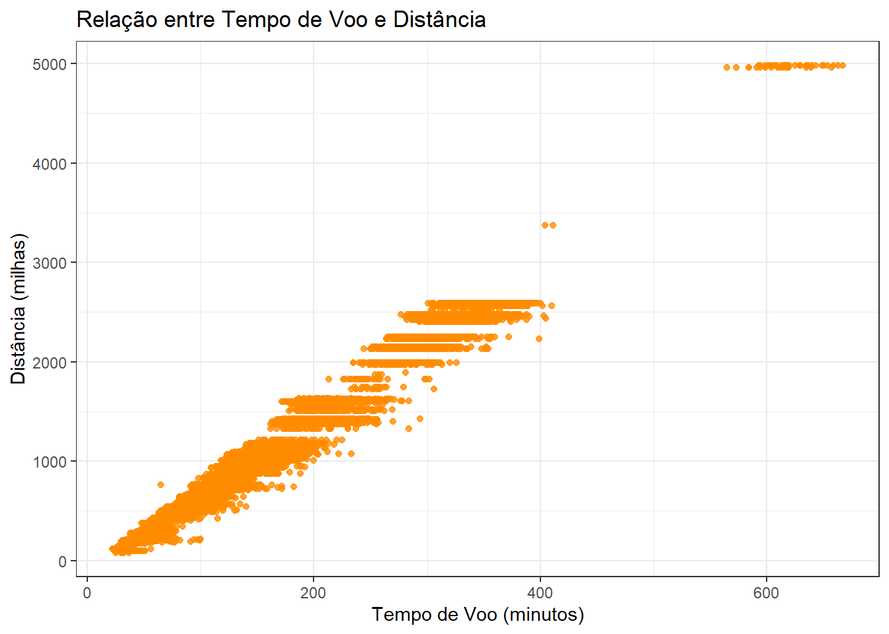
Gráfico de Setores (Pizza)
Um gráfico de setores é útil para representar a proporção de cada categoria em relação ao total.
# Criando um gráfico de setores para a variável "origin"
ggplot(flights, aes(x = "", fill = origin)) +
geom_bar(width = 1) +
coord_polar(theta = "y") +
labs(title = "Proporção de Voos por Destino", fill = "Origem",
x = NULL, y = NULL)+
scale_fill_manual(values = c("EWR" = "skyblue",
"LGA" = "lightgreen",
"JFK" = "salmon")) # Definindo cores personalizadas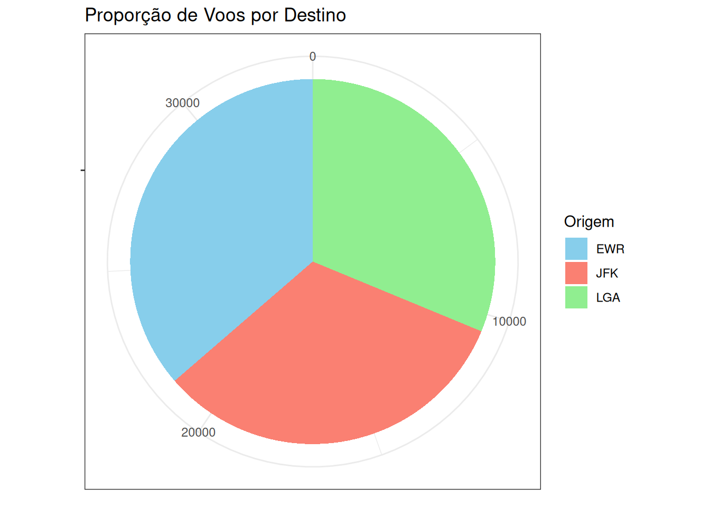
Embora gráficos de setores sejam populares, seu uso deve ser criterioso, pois dificultam comparações precisas entre categorias. Em muitos contextos, gráficos de barras oferecem maior clareza.
Gráfico de Mosaico
Um gráfico de mosaico é útil para visualizar a relação entre duas variáveis categóricas, mostrando a proporção de cada categoria em cada nível da outra variável.
# Criando um gráfico de mosaico para a relação entre "origin" e dia da semana do voo.
dias_pt <- c(
"domingo",
"segunda-feira",
"terça-feira",
"quarta-feira",
"quinta-feira",
"sexta-feira",
"sábado"
)
flights |>
mutate(
day_of_week = wday(time_hour, label = TRUE, abbr = FALSE, locale = "Portuguese_Brazil.utf8"),
day_of_week = factor(day_of_week, levels = dias_pt)
) |>
ggplot(aes(x = origin, fill = day_of_week)) +
geom_bar(position = "fill") +
labs(
title = "Relação entre Origem e Dia da Semana",
fill = "Dia da Semana",
x = "Origem",
y = "Proporção"
) +
scale_fill_manual(values = RColorBrewer::brewer.pal(7, "Set2"))
1.2.5 Associação entre Duas Variáveis
Até este ponto, a análise concentrou-se principalmente em variáveis isoladas, explorando suas distribuições e características individuais. No entanto, muitas perguntas relevantes em ciência de dados envolvem compreender como duas ou mais variáveis se relacionam. A análise de associação permite investigar padrões conjuntos, dependências e possíveis relações entre variáveis, constituindo um passo intermediário entre a exploração descritiva e análises explicativas mais avançadas.
Um exemplo de análise de associação entre duas variáveis pode ser feito ao contar o número de voos de cada origem para cada destino e selecionar os 5 destinos mais frequentes para cada origem, podemos explorar a associação entre origem e destin O código abaixo fornece os 5 destinos mais frequentes a partir de cada origem, permitindo-nos explorar a associação entre origem e destino de voos.
most_frequent_dest <- flights |>
group_by(origin, dest) |>
count() |>
arrange(desc(n)) |>
group_by(origin) |>
slice_max(n, n = 5)
most_frequent_dest |>
kableExtra::kable()| origin | dest | n |
|---|---|---|
| EWR | ORD | 622 |
| EWR | MCO | 553 |
| EWR | SFO | 549 |
| EWR | CLT | 516 |
| EWR | BOS | 512 |
| JFK | LAX | 1118 |
| JFK | SFO | 766 |
| JFK | MCO | 591 |
| JFK | BOS | 571 |
| JFK | SJU | 485 |
| LGA | ATL | 1065 |
| LGA | ORD | 879 |
| LGA | CLT | 646 |
| LGA | MIA | 567 |
| LGA | DFW | 493 |
| origin | dest | n |
|---|---|---|
| EWR | ORD | 622 |
| EWR | MCO | 553 |
| EWR | SFO | 549 |
| EWR | CLT | 516 |
| EWR | BOS | 512 |
| JFK | LAX | 1118 |
| JFK | SFO | 766 |
| JFK | MCO | 591 |
| JFK | BOS | 571 |
| JFK | SJU | 485 |
| LGA | ATL | 1065 |
| LGA | ORD | 879 |
| LGA | CLT | 646 |
| LGA | MIA | 567 |
| LGA | DFW | 493 |
Além da análise tabular, também podemos visualizar os destinos mais frequentes por origem usando um gráfico de barras.
# Gráfico de barras dos destinos mais frequentes por origem
library(tidytext)
ggplot(most_frequent_dest, aes(x = reorder_within(dest,n,dest), y = n, fill = dest)) +
geom_bar(stat = "identity", position = "dodge") +
scale_x_reordered() +
labs(title = "Destinos Mais Frequentes por Origem",
x = "Origem",
y = "Número de Voos",
fill = "Destino") +
facet_grid(~origin, scales = "free_x") +
theme(axis.text.x = element_text(angle = 45, hjust = 1))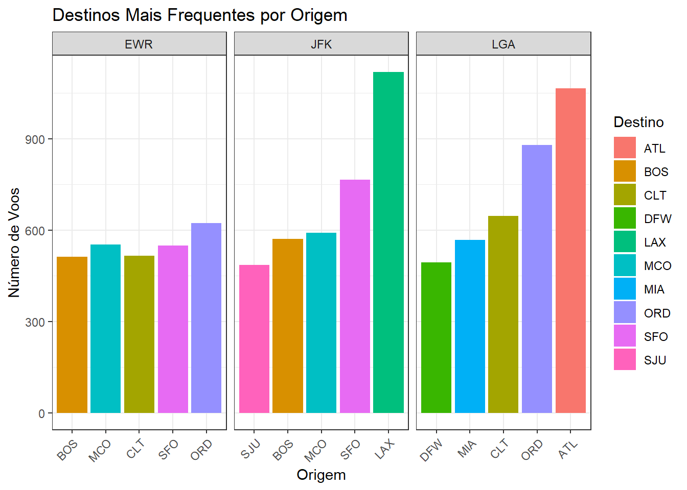
Podemos investigar se existe alguma relação entre a distância do voo e o atraso médio. Para explorar essa relação, podemos criar um gráfico de dispersão que mostra a distância média em relação ao atraso médio para cada destino.
library(plotly)
grafico <- flights |>
filter(!is.na(distance), !is.na(arr_delay)) |>
group_by(dest) |>
summarise(distance = mean(distance),
delay = mean(arr_delay)) |>
mutate(sinal = ifelse(delay > 0, "Atrasou", "Adiantou")) |>
ggplot(aes(x = distance, y = delay, label = dest, color = sinal))+
geom_point() +
scale_color_manual(values = c("Adiantou" = "lightgreen",
"Atrasou" = "salmon")) + # Definindo cores manualmente
labs(title = "Relação entre Distância Média e Atraso Médio por Destino",
x = "Distância Média (milhas)",
y = "Atraso Médio (minutos)",
color = "Atraso / Adiantamento")Exercício: quais outras variáveis poderiam ter suas relações exploradas?
1.3 Estudo de Caso: questões estratégicas de negócio
Esta seção propõe um conjunto de questões analíticas com foco em tomada de decisão e interpretação gerencial. Diferentemente das seções anteriores, que tiveram caráter predominantemente ilustrativo, este estudo de caso propõe uma análise orientada por perguntas de negócio. O objetivo é demonstrar como as ferramentas de estatística descritiva e visualização podem ser combinadas para apoiar diagnósticos operacionais e decisões gerenciais em contextos reais.
1.3.1 Questões estratégicas de negócio
As questões a seguir têm como objetivo consolidar os conceitos apresentados e estimular o leitor a conduzir uma análise exploratória orientada a decisões de negócio. Para responder às questões, considere agregações por origem, destino e tempo, bem como o uso de visualizações comparativas. Não há uma única abordagem correta.
Quais são os principais gargalos operacionais?
- Identificação de rotas com maiores atrasos, cancelamentos e remanejamentos.
- Alguma rota específica tem consistentemente atrasos elevados?
Há diferenças operacionais entre os três aeroportos de Nova York (JFK, LGA e EWR)?
- Qual deles apresenta maior índice de atrasos? Quais são os horários mais críticos?
A sazonalidade afeta a operação?
- Existem meses ou dias da semana com maior índice de cancelamentos ou atrasos?
Como as condições meteorológicas impactam os voos?
- Quais eventos climáticos mais afetam as operações? Neve, tempestades ou ventos fortes?
DicaRespostas
Os principais achados do estudo de caso estão consolidados abaixo e interpretados à luz de implicações operacionais e estratégicas. O objetivo é destacar como análises descritivas podem apoiar decisões gerenciais, além de discutir limitações e possíveis extensões da análise realizada.
1. Quais são os principais gargalos operacionais?
Vamos identificar rotas (origem–destino) com maior atraso médio na chegada, considerando apenas rotas com volume relevante de voos.
gargalos_rotas <- flights |>
filter(!is.na(arr_delay)) |>
group_by(origin, dest) |>
summarise(
atraso_medio = mean(arr_delay),
n_voos = n(),
.groups = "drop"
) |>
filter(n_voos >= 50) |>
arrange(desc(atraso_medio))| origin | dest | atraso_medio | n_voos |
|---|---|---|---|
| JFK | CMH | 49.95312 | 64 |
| EWR | RIC | 39.04138 | 145 |
| EWR | GRR | 28.03175 | 63 |
| EWR | DCA | 26.81111 | 180 |
| EWR | DAY | 24.27273 | 99 |
| EWR | MKE | 23.02655 | 113 |
| EWR | GSO | 22.38144 | 97 |
| JFK | CLE | 21.38571 | 70 |
| EWR | MEM | 20.93814 | 97 |
| EWR | PWM | 20.37313 | 67 |
Veja no gráfico abaixo o top 10 rotas com maior atraso médio na chegada.
ggplot(
gargalos_rotas |> slice_max(atraso_medio, n = 10),
aes(x = reorder(paste(origin, dest, sep = " → "), atraso_medio),
y = atraso_medio)
) +
geom_col(fill = "salmon") +
coord_flip() +
labs(
title = "Rotas com Maior Atraso Médio na Chegada",
x = "Rota",
y = "Atraso médio (minutos)"
)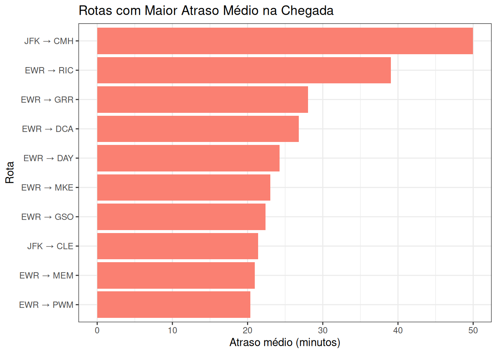
Note que os gargalos operacionais não estão distribuídos aleatoriamente, mas concentrados em um conjunto específico de rotas, com destaque para aquelas que partem dos aeroportos de Newark (EWR) e JFK. Em particular, EWR aparece de forma recorrente entre as rotas mais problemáticas, sugerindo a presença de restrições estruturais ou operacionais persistentes. Além disso, observa-se que vários dos maiores atrasos médios ocorrem em rotas de curta ou média distância, o que indica que esses atrasos não são explicados apenas pelo tempo de voo, mas possivelmente por congestionamentos, limitações de capacidade aeroportuária ou atrasos acumulados ainda em solo.
Do ponto de vista estratégico, os resultados indicam que iniciativas de melhoria operacional devem priorizar rotas específicas, em vez de ações genéricas sobre toda a malha. A recorrência de EWR entre as rotas mais atrasadas sugere a necessidade de uma avaliação aprofundada da capacidade do aeroporto, incluindo alocação de slots, eficiência das operações em solo e sensibilidade a fatores externos, como condições meteorológicas. Intervenções direcionadas nesses pontos têm potencial para gerar ganhos relevantes de pontualidade com custo relativamente controlado.
Além disso, o fato de rotas mais curtas apresentarem atrasos elevados aponta para oportunidades de melhoria rápida por meio de ajustes operacionais, como revisão de horários críticos, otimização de processos de embarque e desembarque e melhor coordenação entre companhias aéreas e controle de tráfego aéreo. Essas ações podem reduzir atrasos sem depender de investimentos estruturais de longo prazo, contribuindo diretamente para a melhoria da experiência do passageiro e da eficiência operacional.
Uma vez identificadas as rotas críticas, surge a questão de saber se esses atrasos estão associados a características estruturais da rota ou a práticas operacionais específicas das companhias aéreas.
# Selecionar rotas críticas (top 10)
rotas_criticas <- gargalos_rotas |>
slice_max(atraso_medio, n = 10) |>
select(origin, dest)
# Atraso médio por companhia dentro das rotas críticas
atraso_cia_rotas <- flights |>
semi_join(rotas_criticas, by = c("origin", "dest")) |>
filter(!is.na(arr_delay)) |>
group_by(origin, dest, carrier) |>
summarise(
atraso_medio = mean(arr_delay),
n_voos = n(),
.groups = "drop"
) |>
filter(n_voos >= 20) |> # controle de volume
arrange(desc(atraso_medio))
# atraso_cia_rotas |>
# kableExtra::kable()ggplot(
atraso_cia_rotas,
aes(x = reorder(carrier, atraso_medio),
y = atraso_medio,
fill = carrier)
) +
geom_col(show.legend = FALSE) +
coord_flip() +
facet_grid(origin + dest ~ ., scales = "free_y") +
labs(
title = "Atraso Médio por Companhia nas Rotas Críticas",
x = "Companhia aérea",
y = "Atraso médio na chegada (minutos)"
)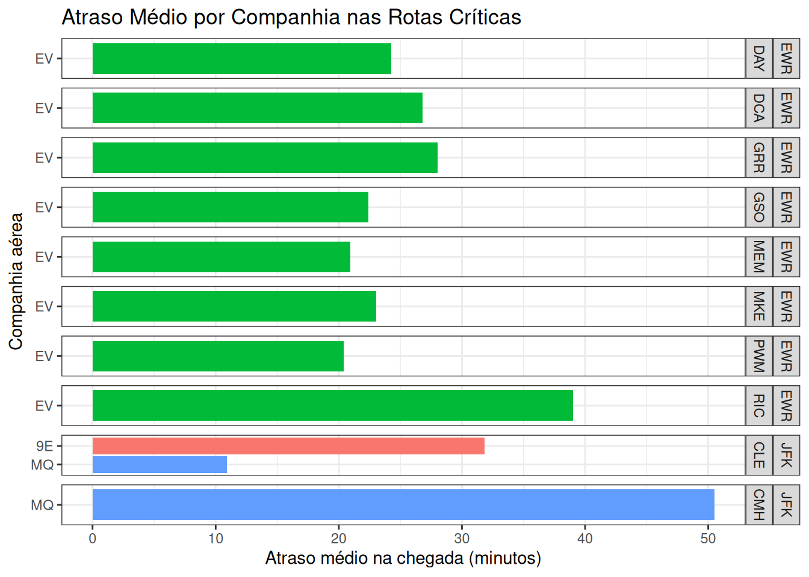
A análise dos atrasos por companhia aérea nas rotas críticas revela que os gargalos observados não são, em sua maioria, de natureza estrutural do aeroporto ou da rota. Em diversas rotas com elevado atraso médio, observa-se forte concentração em uma única companhia aérea, em especial a EV (ExpressJet Airlines), que domina praticamente todas as rotas mais problemáticas a partir de EWR, mesmo quando o número de voos é suficientemente grande para garantir robustez estatística. Além disso, em rotas operadas por mais de uma companhia, como JFK–CLE, o desempenho heterogêneo entre empresas — com 9E (Endeavor Air) apresentando atraso médio substancialmente superior ao da MQ (Envoy Air) — indica que fatores operacionais internos, e não condições aeroportuárias ou da rota, desempenham papel central na geração dos atrasos. Esses resultados sugerem que políticas voltadas exclusivamente à infraestrutura aeroportuária seriam insuficientes para mitigar os atrasos observados, sendo necessária também a consideração de práticas operacionais específicas das companhias aéreas.
2. Há diferenças operacionais entre os três aeroportos de Nova York (JFK, LGA e EWR)?
atraso_origem <- flights |>
filter(!is.na(dep_delay)) |>
group_by(origin) |>
summarise(
atraso_medio = mean(dep_delay),
mediana = median(dep_delay),
.groups = "drop"
)Veja na tabela abaixo o atraso médio na partida por aeroporto.
| origin | atraso_medio | mediana |
|---|---|---|
| EWR | 14.88826 | -1 |
| JFK | 11.43401 | -1 |
| LGA | 10.67389 | -3 |
A figura a seguir mostra o atraso médio por horário e origem do voo.
flights |>
filter(!is.na(dep_delay)) |>
mutate(hour = hour(time_hour)) |>
group_by(origin, hour) |>
summarise(atraso_medio = mean(dep_delay), .groups = "drop") |>
filter(atraso_medio >= 0) |>
ggplot(aes(x = hour, y = atraso_medio)) +
geom_col(linewidth = 1, alpha = 0.8) +
labs(
title = "Atraso Médio por Horário e Aeroporto",
x = "Hora do dia",
y = "Atraso médio (minutos)"
) +
facet_grid(~origin)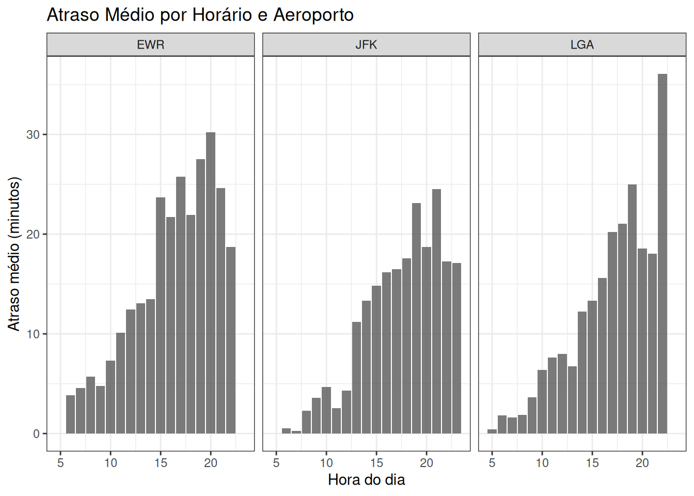
A análise agregada dos atrasos por aeroporto de origem mostra diferenças claras de desempenho operacional entre os três principais aeroportos de Nova York. O aeroporto de Newark (EWR) apresenta o maior atraso médio na partida (14,9 minutos), seguido por JFK (11,4 minutos) e LaGuardia (LGA), com o menor atraso médio (10,7 minutos). Apesar disso, as medianas negativas em todos os aeroportos indicam que mais da metade dos voos parte no horário ou antecipadamente, o que sugere que os atrasos médios elevados são influenciados por uma cauda de eventos extremos — poucos voos muito atrasados que puxam a média para cima.
A análise por horário do dia revela um padrão consistente de deterioração operacional ao longo do dia, caracterizando um forte efeito de propagação de atrasos. Nos três aeroportos, os voos realizados nas primeiras horas da manhã apresentam atrasos médios próximos de zero ou mesmo negativos, indicando maior pontualidade. À medida que o dia avança, os atrasos médios aumentam progressivamente, alcançando seus piores níveis no final da tarde e início da noite. Esse padrão é mais acentuado em EWR, onde os atrasos ultrapassam 25 minutos entre 17h e 20h, evidenciando maior sensibilidade ao acúmulo de atrasos e possíveis limitações de capacidade.
Comparativamente, JFK apresenta uma evolução mais gradual dos atrasos ao longo do dia, com crescimento significativo apenas a partir do início da tarde, enquanto LGA mantém níveis relativamente baixos até o meio da tarde, quando também passa a apresentar aumentos mais pronunciados. Ainda assim, LGA exibe picos relevantes em horários específicos, como no período noturno, indicando que, embora seja o aeroporto mais eficiente em média, não está imune a congestionamentos pontuais.
Do ponto de vista estratégico, os resultados sugerem que EWR representa o principal gargalo operacional do sistema aeroportuário nova-iorquino, exigindo ações prioritárias de gestão de capacidade, revisão de slots e mitigação da propagação de atrasos ao longo do dia. Além disso, a forte dependência do horário reforça a importância de políticas operacionais voltadas para a proteção da malha nos períodos da manhã, uma vez que atrasos iniciais tendem a se amplificar nas horas subsequentes, afetando de forma sistêmica o desempenho ao longo do dia.
3. A sazonalidade afeta a operação?
atraso_mes <- flights |>
filter(!is.na(arr_delay)) |>
group_by(origin, month) |>
summarise(
atraso_medio = mean(arr_delay)
)
ggplot(atraso_mes, aes(x = factor(month), y = atraso_medio)) +
geom_col(fill = "lightgreen") +
facet_grid(~origin) +
labs(
title = "Atraso Médio por Mês",
x = "Mês",
y = "Atraso médio (minutos)"
)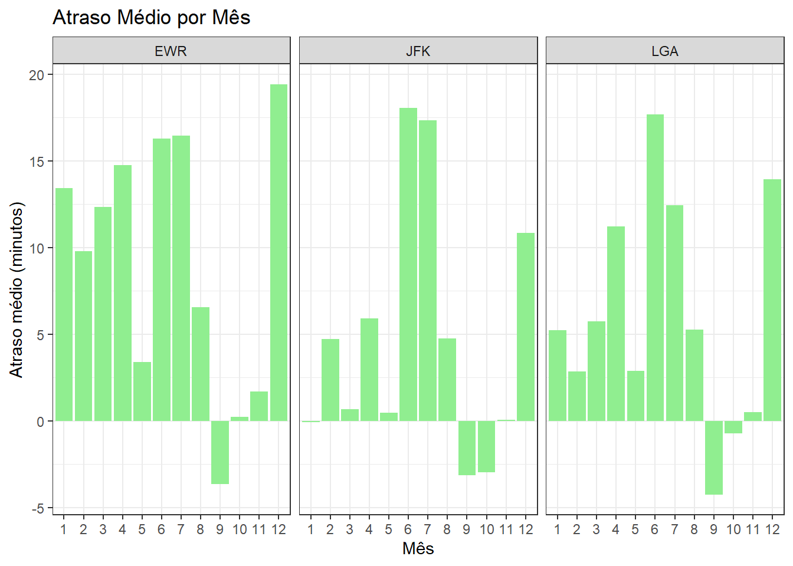
dias_pt <- c(
"domingo", "segunda-feira", "terça-feira",
"quarta-feira", "quinta-feira", "sexta-feira", "sábado"
)
atraso_dia <- flights |>
mutate(
day_of_week = wday(
time_hour,
label = TRUE,
abbr = FALSE,
locale = "Portuguese_Brazil.utf8"
),
day_of_week = factor(day_of_week, levels = dias_pt)
) |>
filter(!is.na(arr_delay)) |>
group_by(origin, day_of_week) |>
summarise(atraso_medio = mean(arr_delay), .groups = "drop")
ggplot(atraso_dia, aes(x = day_of_week, y = atraso_medio)) +
geom_col(fill = "plum") +
facet_grid(~origin) +
labs(
title = "Atraso Médio por Dia da Semana",
x = "Dia da semana",
y = "Atraso médio (minutos)"
)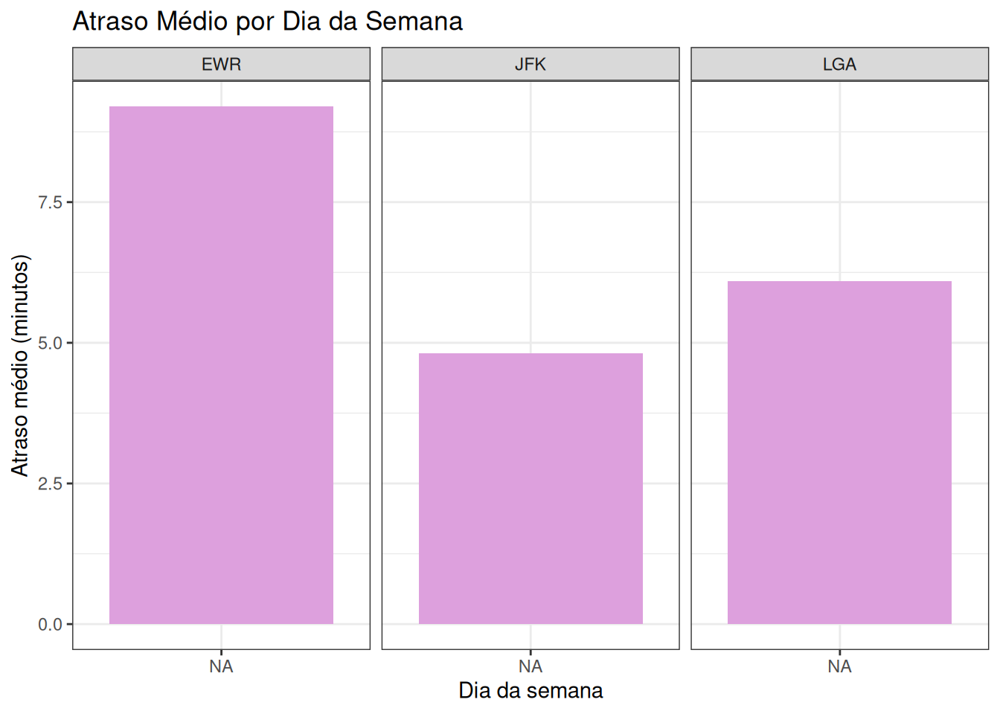
Os gráficos evidenciam um padrão claro de sazonalidade tanto ao longo da semana quanto ao longo do ano, com diferenças consistentes entre as origens. Em termos semanais, EWR apresenta atrasos médios sistematicamente mais elevados e maior variabilidade, sugerindo maior sensibilidade a congestionamentos operacionais, especialmente em dias úteis de maior demanda; JFK mostra atrasos médios mais moderados e estáveis, enquanto LGA apresenta comportamento intermediário, com alguns dias específicos concentrando picos de atraso. No recorte mensal, observa-se um efeito sazonal pronunciado: meses associados a maior demanda e condições meteorológicas adversas (verão e inverno) concentram os maiores atrasos médios, sobretudo em EWR e JFK, enquanto meses de transição tendem a apresentar desempenho operacional melhor. Em conjunto, os resultados indicam que a pontualidade é fortemente influenciada por fatores estruturais do aeroporto e por sazonalidade temporal, reforçando a importância de planejamento operacional diferenciado por origem, dia da semana e época do ano.
4. Como as condições meteorológicas impactam os voos?
Vamos aprofundar essa análise, olhando para as condições meteorológicas nas rotas que apresentam maior atraso médio na chegada.
rotas_criticas <- gargalos_rotas |>
slice_max(atraso_medio, n = 10) |>
select(origin, dest)
# Filtrar voos apenas dessas rotas
flights_rotas_criticas <- flights |>
semi_join(rotas_criticas, by = c("origin", "dest"))
# Cruzar com dados meteorológicos
flights_weather <- flights_rotas_criticas |>
left_join(
weather,
by = c("origin", "time_hour")
)
# Resumo descritivo das condições meteorológicas nas rotas críticas
resumo_meteo <- flights_weather |>
summarise(
temp_media = mean(temp, na.rm = TRUE),
vento_medio = mean(wind_speed, na.rm = TRUE),
visibilidade_media = mean(visib, na.rm = TRUE),
precipitacao_media = mean(precip, na.rm = TRUE),
atraso_medio = mean(arr_delay, na.rm = TRUE)
)
resumo_meteo_origin_dest <- flights_weather |>
group_by(origin, dest) |>
summarise(
temp_media = mean(temp, na.rm = TRUE),
vento_medio = mean(wind_speed, na.rm = TRUE),
visibilidade_media = mean(visib, na.rm = TRUE),
precipitacao_media = mean(precip, na.rm = TRUE),
atraso_medio = mean(arr_delay, na.rm = TRUE)
)A tabela abaixo mostra as estatísticas descritivas gerais das condições meteorológicas nos voos das rotas com maior atraso.
| temp_media | vento_medio | visibilidade_media | precipitacao_media | atraso_medio |
|---|---|---|---|---|
| 56.67704 | 10.31411 | 9.124761 | 0.0067495 | 27.65729 |
A tabela abaixo segmenta a análise por rota.
| origin | dest | temp_media | vento_medio | visibilidade_media | precipitacao_media | atraso_medio |
|---|---|---|---|---|---|---|
| EWR | DAY | 56.81000 | 10.154568 | 8.979167 | 0.0091667 | 24.27273 |
| EWR | DCA | 56.75886 | 9.552070 | 9.274611 | 0.0073057 | 26.81111 |
| EWR | GRR | 54.07631 | 9.896708 | 8.903846 | 0.0032308 | 28.03175 |
| EWR | GSO | 54.49258 | 9.526560 | 8.971649 | 0.0032990 | 22.38144 |
| EWR | MEM | 58.50459 | 11.180514 | 9.252294 | 0.0146789 | 20.93814 |
| EWR | MKE | 55.07385 | 9.304597 | 9.181624 | 0.0038462 | 23.02655 |
| EWR | PWM | 51.36543 | 10.389899 | 8.757143 | 0.0034286 | 20.37313 |
| EWR | RIC | 58.71102 | 9.793373 | 8.848640 | 0.0089116 | 39.04138 |
| JFK | CLE | 58.45486 | 13.233970 | 9.785714 | 0.0012857 | 21.38571 |
| JFK | CMH | 60.78457 | 12.576381 | 9.346429 | 0.0062857 | 49.95312 |
Os resultados indicam que os maiores atrasos médios observados nas rotas analisadas não estão associados, em geral, a condições meteorológicas adversas. As rotas com pior desempenho operacional apresentam, em média, temperaturas amenas, boa visibilidade, baixos níveis de precipitação e ventos moderados. Ainda assim, os atrasos médios são elevados, o que sugere que fatores climáticos exercem papel secundário na explicação dos gargalos identificados, atuando mais como agravantes pontuais do que como causa estrutural dos problemas.
A análise por rota revela que os principais gargalos estão concentrados em poucos corredores específicos, com destaque para rotas partindo de Newark (EWR) e, em menor grau, de JFK. Algumas rotas, como JFK–CMH e EWR–RIC, apresentam atrasos médios persistentemente altos mesmo sob condições climáticas favoráveis, indicando ineficiências operacionais recorrentes, possivelmente relacionadas à gestão de slots, congestionamento aeroportuário ou propagação de atrasos ao longo do dia.
Do ponto de vista estratégico, os achados sugerem que ações voltadas exclusivamente à mitigação de impactos climáticos terão efeito limitado na redução dos atrasos. Medidas focadas em melhoria de processos operacionais, aumento de resiliência da malha aérea e priorização de rotas cronicamente problemáticas tendem a gerar maior impacto. Em especial, o aeroporto de EWR emerge como um ponto crítico da operação, demandando atenção prioritária em iniciativas de planejamento, alocação de recursos e revisão de capacidade.
Ressalta-se que esta análise é descritiva e não estabelece relações causais, sendo possível que eventos meteorológicos extremos, ainda que raros, tenham impactos desproporcionais não capturados pela média.
1.4 Referências e Materiais Complementares
O site Data to Viz é uma referência amplamente utilizada para apoiar a escolha adequada de visualizações gráficas em função do tipo de dado e do objetivo analítico. A plataforma organiza os principais tipos de gráficos de forma sistemática, auxiliando o analista a tomar decisões informadas sobre como representar informações de maneira clara e eficaz.
Além de apresentar uma ampla galeria de visualizações — como gráficos de barras, dispersão, linhas, áreas, mapas e outras variações — o Data to Viz oferece exemplos práticos e orientações conceituais que ajudam a compreender as vantagens, limitações e contextos de uso de cada gráfico. O material também aborda boas práticas de visualização, incluindo aspectos de legibilidade, interpretação correta e comunicação responsável dos dados, tornando-se um complemento natural aos conceitos discutidos neste capítulo.
Como leitura complementar, recomenda-se o livro Storytelling com Dados: Um guia sobre visualização de dados para profissionais de negócios, de Cole Nussbaumer Knaflic. A obra enfatiza a importância de estruturar narrativas claras a partir de dados, destacando como escolhas visuais, foco narrativo e contextualização adequada podem transformar análises técnicas em mensagens acionáveis para tomada de decisão. Em particular, o livro aprofunda aspectos de comunicação, hierarquia visual e redução de ruído gráfico, reforçando a ideia de que visualização de dados não é apenas uma ferramenta analítica, mas também um instrumento estratégico de comunicação.